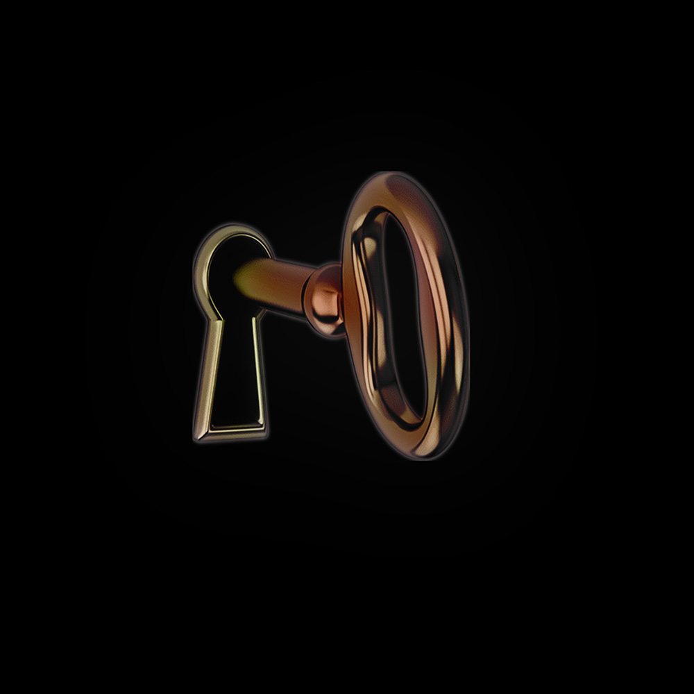

- ▮ STRATA V/A: FEVER BINDS THE IMAGE (DDL + CD)
- ▮ PRIVATE STREAMING LINK (SOUNDCLOUD)
- ▮ DOWNLOAD LINK (AIFF/WAV/FLAC/MP3)
- ▮ HIGH RESOLUTION COVER AND PRESS IMAGES
- ▮ TITLE
- ▮ FEVER BINDS THE IMAGE
- ▮ CATALOGUE NUMBER
- ▮ STR006
- ▮ RELEASE DATE
- ▮ 30.10.26
- ▮ ARTISTS (A-Z)
- ▮ ANS M
- ▮ CASTLE MAOL
- ▮ FAUSTO MERCIER
- ▮ HOLODEC
- ▮ KELMAN DURAN
- ▮ KENT WATARI
- ▮ ONAS UENO
- ▮ PIETRO BARDINI
- ▮ RẮN CẠP ĐUÔI
- ▮ YIKII
- ▮ ALBUM COVER
-
▮

- ▮ ABOUT
- ▮ "Fever Binds The Image" is a ten-track compilation bringing together artists from across the globe with STRATA's own. Each artist was invited to respond to the theme of 'vestibules', providing artists with guidelines and images as a starting point. The resulting album hints toward imaginary non-spaces, thresholds between inside and outside, moments of brief isolation between one state and the next.
- ▮ This compilation, like the rest of our catalogue, isn't genre-specific but is united by a sense of the unfamiliar and the uncanny, moving through ambient, experimental electronic and modern composition. What ties the works together is the visual imaginary that accompanies each release and live show.
- ▮ We are curating this compilation as a way to encapsulate and present what STRATA is and aims to be.
- ▮ RELEASE FORMAT
- ▮ Digital + CDs (30 limited-edition CDs).
- ▮ Digital distribution via State51 Conspiracy + Boomkat & Bleep. Physical distribution directly via Bandcamp.
- ▮ TRACKLIST
- ▮ 1. PIETRO BARDINI: The flood has left but the wood is rotten [6'21"]
- ▮ 2. YIKII: 月光标本室，合鸣枯萎时(Moonlight Specimen Room, As Resonances Withered) [3'17"]
- ▮ 3. ONAS UENO: The Glint of His Veneers [5'44"]
- ▮ 4. ANS M: Unfurl Silvers [3'52"]
- ▮ 5. HOLODEC: reappear [6'52"]
- ▮ 6. CASTLE MAOL: vestibule7 [3'27"]
- ▮ 7. KELMAN DURAN: july 23-8 b lues 2-4 [2'21"]
- ▮ 8. KENT WATARI: iNhaleeXhale [4'37"]
- ▮ 9. FAUSTO MERCIER: angels morts [5'43"]
- ▮ 10. RẮN CẠP ĐUÔI FT. IMRYLL: Long Marshes [2'48"]
- ▮ CREDITS
- ▮MASTERING: FAUSTO MERCIER
- ▮ALBUM COVER & CD DESIGN: STRATA
- ▮ ABOUT STRATA
- ▮ STRATA is an audiovisual label and event series based in London founded in 2024.
- ▮ We treat the visual as an intrinsic part of the work itself, expressed through live A/V performances, installations and limited physical editions accompanying our releases. We curate works where sound and visual converge into the surreal and unfamiliar, the disorienting and the emotionally uncanny.
- ▮ We have released work by Partial Defrag, Onas Ueno, Gloves To Bouquet and Pietro Bardini with reviews from The Wire, Igloo Magazine, NINA Protocol and The Quietus. We have produced and performed at Cafe Oto, Spanners, The Horse Hospital, Engine Rooms, The White Hotel, Corsica Studios, Goldsmiths SIML, IKLECTIK and RCA VisLab.
- ▮ ARTISTS BIO (A-Z)
- ▮ [ANS M] Ans M is an artist based in London, whose textural focused compositions drift between environmental field recordings, guitar and distorted electronics. Since 2022, she has co-run the label Scorpio Red alongside Kelman Duran.
- ▮ [CASTLE MAOL] Alexander MacKinnon is a visual artist, game designer and producer based in London.
- ▮ [FAUSTO MERCIER] Fausto Mercier is a producer and sound artist based in Hungary. Since his first album on Montreal-based label Unlog in 2016, he’s had releases on several labels, like the Budapest-based experimental staple EXILES and the German hi-tech sound lab Kaer’Uiks. His work is marked by an affinity for soundscapes and a certain cinematic structuring of sonic textures. Fausto Mercier depicts a tense and organic world where micro-sounds cross path with slices of noise, tied together by a highly textured and granular force field.
- ▮ [HOLODEC] Holodec - real name Jieh - is a musician and producer based in LA who has been described as “a quietly gifted artist who operates inside the long shadow of late ‘90s US R&B and the space where it intersects ambient, neo-classical, and the weightless bass interzones of contemporary UK club music” (Boomkat, 2023). TRU FOLK follows the 2022 album All Dogs Come from Wolves, released by Kelman Duran’s Scorpio Red label. Jieh has worked alongside such contemporaries as Main Attrakionz, Nosaj Thing, Kelman Duran, and acclaimed film composer Lim Giong.
- ▮ [ONAS UENO] Jonas Pequeno is a multidisciplinary artist based in London whose work spans installation, video and sound, blending ambient atmospheres, digital dissonance and tactile textures to create immersive, expansive and fragmented environments. His music, released under the moniker Onas Ueno, has been described as haunting and ethereal, moving fluidly between abrasion and serenity, leaving a lasting, otherworldly impression. Alongside his musical output, Pequeno is an award-winning visual artist whose work has been exhibited internationally and within major institutions around the world.
- ▮ [KELMAN DURAN] Kelman Duran is a Dominican songwriter, producer, composer, DJ and multi-disciplinary artist. Alongside his solo output, Duran is best known for his production and songwriting contributions to opening track “I’m That Girl” and “Heated” from Beyoncé’s 2022 album Renaissance. The album went on to win the Grammy Award for Best Dance/Electronic Album. He recently scored the feature film Rodeo, directed by Lola Quivoron, which won the Coup de Coeur award at Cannes Film Festival 2022.
- ▮ [KENT WATARI] kent watari is a musician based in Tokyo, Japan. Their primary activities centre on composition, arrangement, production, and drumming. Their key works include advertising music, the soundtrack for the anime LINK CLICK, and collaborations with singer-songwriter Kaho Nakamura and guitarist Ichika Nito. As a drummer, watari has also participated in projects including the contemporary pop band Tokyo Shiokouji and the solo project of arauchi yu.
- ▮ [PIETRO BARDINI] Pietro Bardini is a composer and visual artist based between Italy and the UK. His works have been shown and played at arebyte, Barbican Centre, Café OTO, Corsica Studios, The White Hotel, The Horse Hospital, IKLECTIK, Rai 3 and MK Gallery. He also releases as Partial Defrag, as previously covered by The Quietus and as a NINA Protocol Staff Pick.
-
▮
[RẮN CẠP ĐUÔI] Ran Cap is an experimental music and visual arts collective based in Ho Chi Minh City, Vietnam, formed in 2015. Known for their chaotic, improvised live sets, they blend traditional Vietnamese instruments with contemporary electronic textures, harsh noise, and a massive dose of industrial or punk-inspired energy.
- ▮ MORE INFORMATION ABOUT STRATA RELEASES AND EVENTS: STRATAEDITION.XYZ
- ▮ FOR ALL ENQUIRIES: STRATA.EDITION@GMAIL.COM